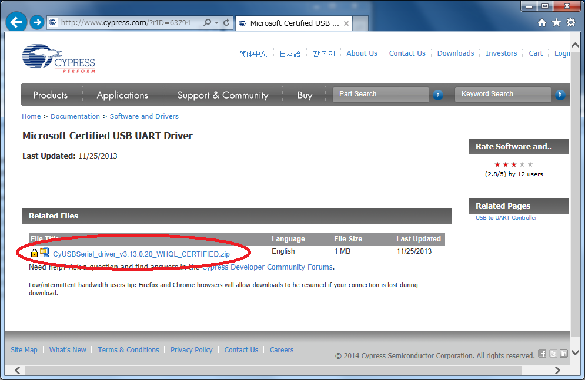
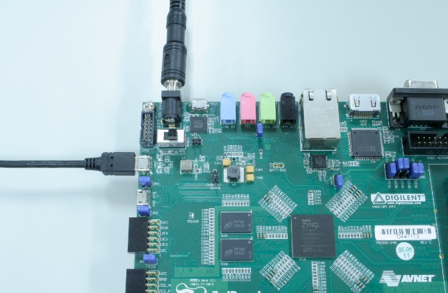
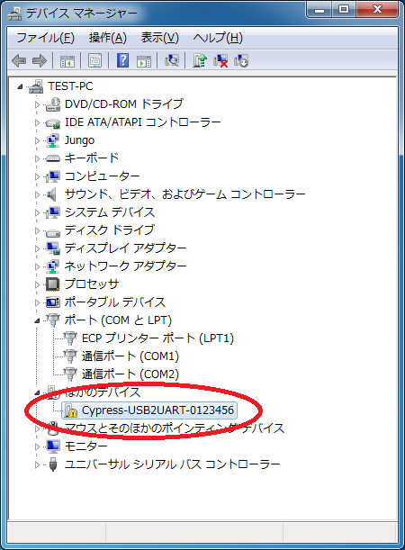
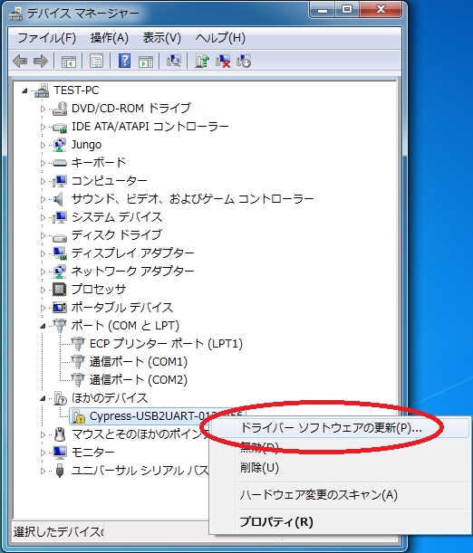
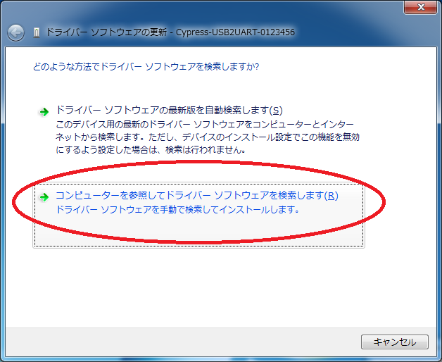
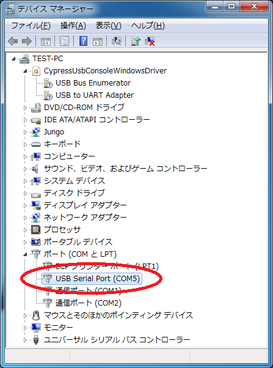
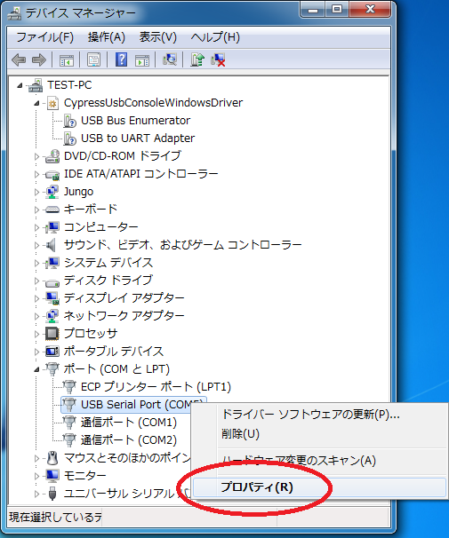
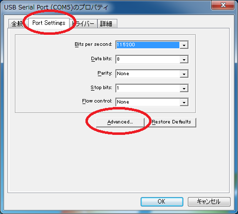
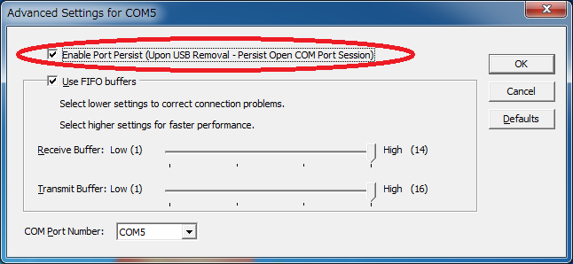

ZedBoard用 Cypress USB仮想シリアル・ドライバ・インストール手順
●アーカイブのダウンロード
次のリンクから、USB仮想シリアル・ドライバのアーカイブ・ファイル（CyUSBSerial_driver_v3.13.0.20_WHQL_CERTIFIED.zip）をダウンロードしてください。なお、ダウンロードにはユーザ登録が必要です。あらかじめ、サイプレス社のサイトでユーザ登録しておいてください（無料）。
・USB仮想シリアル・ドライバのダウンロード・ページへ
上記リンクは、2014年8月1日現在のURLです。上記リンクが切れている場合は、サイプレス社のトップページから、キーワード検索でダウンロード・ページを探してください。
・サイプレス社のトップページへ
検索キーワード：「CyUSBSerial_driver_v3.13.0.20_WHQL_CERTIFIED」など
ダウンロードしたら、適当なフォルダでアーカイブを解凍しておきます。

USB仮想シリアル・ドライバをダウンロード
●ZedBoardの準備とドライバのインストール
ZedBoardの仮想シリアル用USBコネクタとPCをマイクロUSBケーブルで接続します。また付属のACアダプタを接続して、電源を投入してください。

写真 ZedBoardの準備
ZedBoardに電源が入るとUSBデバイスが認識され、ドライバのインストールが始まります。自動ではドライバはインストールされないので、「手動で検索してインストール」を選択してください。または、いったんドライバ・インストールをキャンセルし、デバイス・マネージャから次の写真のように「Cypress-USB2UART」という名称のデバイスを見つけてください。

デバイス・マネージャで「Cypress-USB2UART」を確認
該当デバイスを選択し、右クリックでポップアップを開き「ドライバ・ソフトウェアの更新」を選択してください。

「ドライバ・ソフトウェアの更新」を選択
起動したら「手動で検索してインストール」を選択してください。

「手動で検索してインストール」を選択
先ほど解凍したフォルダの中のcyusbserial\binフォルダの下に、Windows xpからWindows 8まで、OS別にフォルダがあるので、使用しているOSに合わせてフォルダを選択し、さらにその下に32ビット版か64ビット版それぞれにフォルダがあるので、こちらも使用しているOSに合わせてフォルダを選択してください。

フォルダ選択（Windows 7/64bit版の例）
ドライバのインストールが完了したら、再度デバイス・マネージャを開いて、COMポート番号を確認してください。次の写真の例は、「COM5」として認識されています。

COMポート番号確認（COM5の例）
●COMポートの設定
ZedBoardの仮想シリアル・ポートの使い勝手を良くするために、もう一つ設定があります。デバイス・マネージャを開き、該当COMポートを選択し、右クリックでポップアップを開いて、「プロパティ」を選択してください。

「プロパティ」の選択
プロパティが開いたら、「Port Settings」タブを選択し、「Advanced...」ボタンをクリックします。

「Port Settings」タブの「Advanced...」ボタンをクリック
一番上の「Enable Port Presist (Upon USB Removal - …)」にチェックが入っていない場合は、チェックを入れてください。

「Enable Port Presist」にチェックを入れる
この設定をしておくことで、ターミナル・ソフトウェアで該当COMポート（今回の例ではCOM5）を開いたままの状態でも、ZedBoardの電源をON/OFF可能になります。
この設定をしていないと、ターミナル・ソフトウェアで該当COMポートを開いたままの状態でZedBoardの電源を切ってしまった時に、該当COMポートとの接続が内部的に切れてしまいます。いったん接続が切れると、ZedBoardの電源を再投入しても仮想シリアル・ポートは再接続されません。いったんターミナル・ソフトウェアを終了して再度起動（または、該当COMポートの接続をいったん切断して再接続）する必要があります。
ZedBoard電源投入直後のブート・メッセージなどを確認するには、ターミナル・ソフトウェアを開いたままでZedBoardのON/OFFできるように、この設定をしておくことをお勧めします（筆者も当初はこの設定に気づかず、「電源投入直後のメッセージが見れない…」と悩みました）。
Copyright (C) 2014 CQ Publishing Co.,Ltd. All Rights Rreserved.